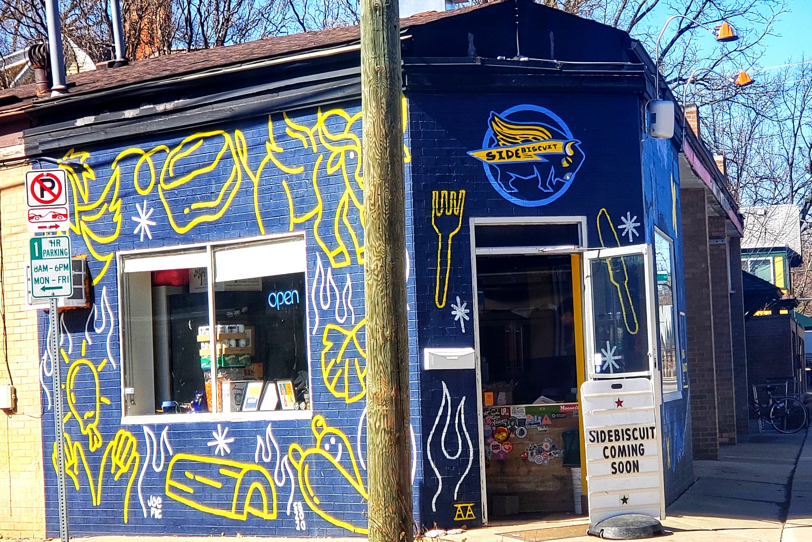
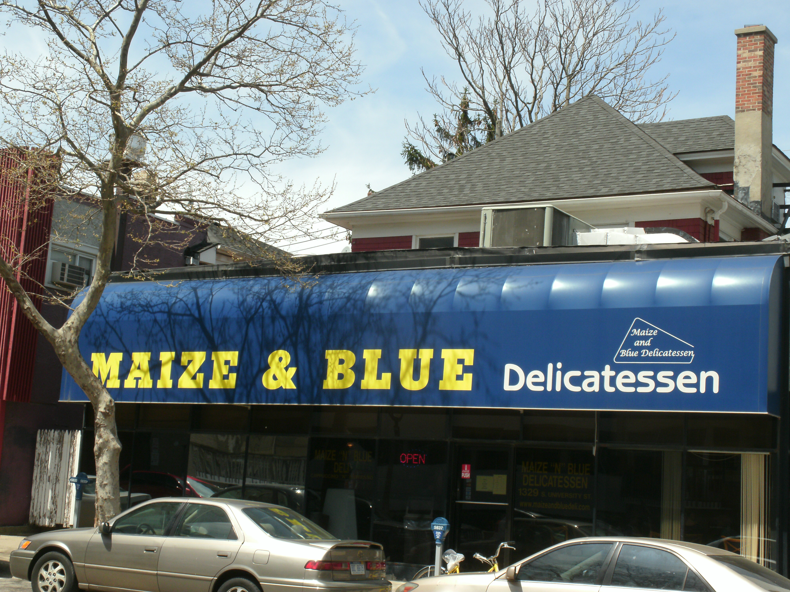

Side Biscuit
A cozy chicken wing and scratch biscuit spot located in Ann Arbor. Side Biscuit hosted an awesome pickling pop-up event for us and taught our members how to make their own pickle brines.
Detroit Street Filling Station
A casual cafe with art-lined walls serving creative comfort fare, plenty of vegan dishes and cocktails. DSFS hosted our first ever pickling pop-up!
Maize and Blue Deli
A staple Ann Arbor deli proudly serving the University of Michigan and the greater AA community. Thank you Maize and Blue for providing our members with pickles for our pilot meeting!
Argus Farm Stop
A farmstand growing Ann Arbor's local food ecosystem. You'll find vegetables, fruit, meats, dairy, and artisan foods from Michigan producers. Thank you Argus for providing us with fresh produce to use for our pop-ups and recipes!